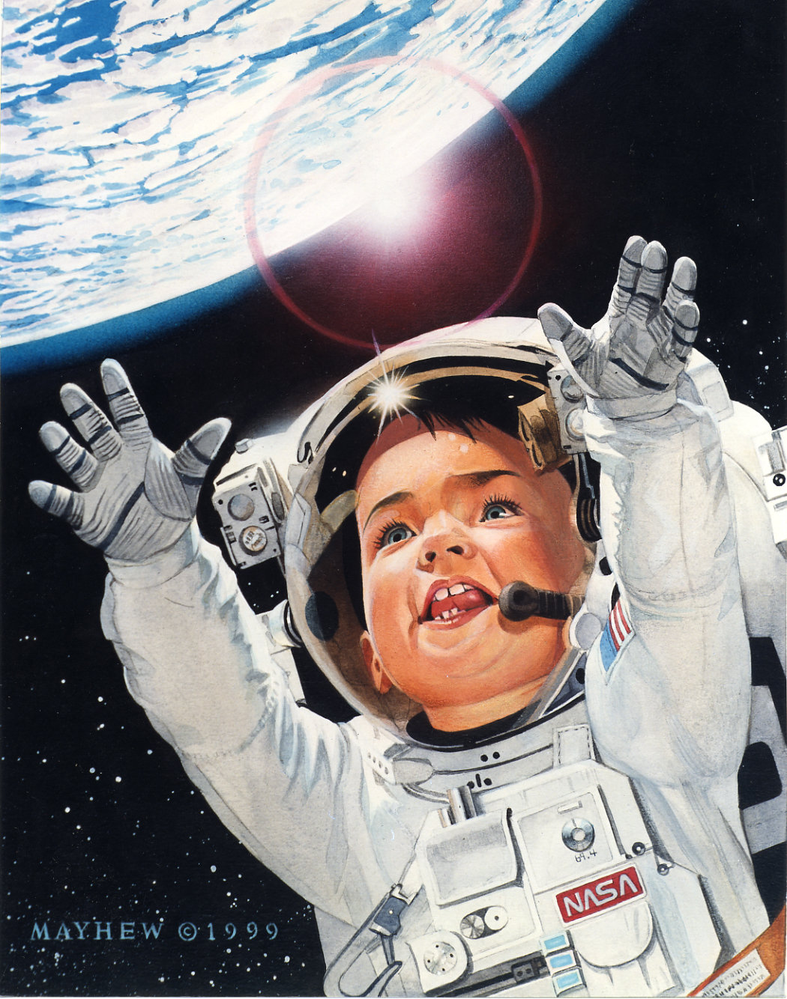

The purpose of this project is to map real launch data onto a 3D globe using
CESIUM. Using this we can experience the launches like we were there. We can also take this a step further and launch a rocket from anywhere in the world! This project aims to spark an interest in young children to have a much greater interest in space paving the way for future generations.
